Technical Analysis: Binary b41149.exe
by Casey Gately
In keeping with the theme of my previous post, “malware never truly dies – it just keeps on compromising”, today I’d like to investigate a binary that surfaced a couple of months ago. While the binary itself is young, the domain it reaches back to for Command and Control (CnC) has been used by nefarious binaries - like Cryp_SpyEye, AUTOIT.Trojan.Agent-9 and TROJ_SPNR - since at least October 2012. Hence, this is another example of how “old” malware continues to compromise long after it has been discovered.
What really caught my eye about this binary was one of its obfuscation techniques. The literal file name of the binary is unknown, so for the purposes of examining it, I renamed it b41149.exe, which are the first six characters of its SHA256 hash. The complete hash will be provided later in the file identifier section.
An initial look at b41149.exe revealed it to be a custom-packed binary with an internal file name of “microsft.exe”, complete with a Microsoft icon (see Figure 1).
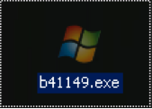 Figure 1: Binary Icon
Even more interesting was an embedded JPEG at offset 11930A. As of this writing, no purpose for this JPEG has been uncovered. Could this be some type of calling card? Figure 2 reflects the embedded JPEG in a hex view while Figure 3 displays the actual image file.
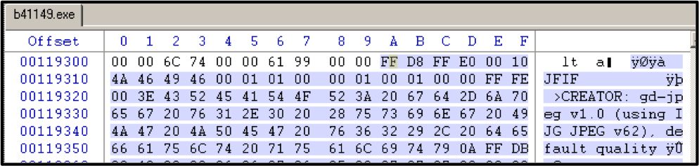 Figure 2: Hew View of Embedded JPEG
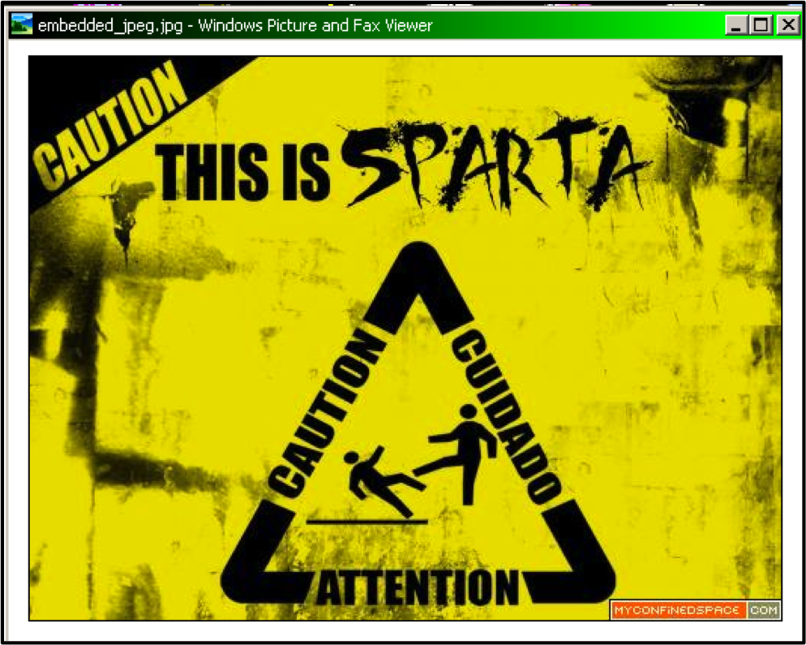 Figure 3: Embedded JPEG Inside b4119.exe
Another curious aspect of b41149.exe, and undoubtedly much more important than the JPEG, was the fact that it contained a Unicode-encoded binary between offset 508B and offset 117C0A. This is the part that really caught my eye. I’ve seen embedded binaries obfuscated in this manner primarily in RTF files, and also in PDFs and DOCs, but I personally haven’t come across one yet that used this obfuscation scheme while embedded inside another binary. It turns out the embedded binary is the real workhorse here, and Figure 4 reflects how it appears inside b41149.exe.
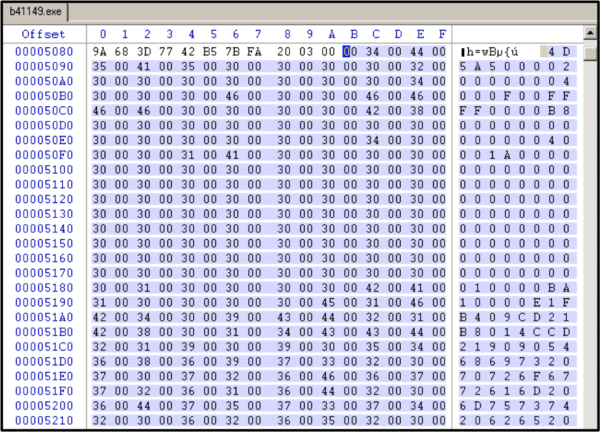 Figure 4: Unicode-encoded Binary Inside b4119.exe
B41149.EXE in Runtime
Upon execution, b41149.exe self-replicates to C:\WINDOWS\System32\mony\System.exe with hidden attributes. In addition, a visibly noticeable command shell is opened. System.exe, the malware’s running process, then hooks to the malware-spawned command shell. However, upon reboot, System.exe hooks to the default browser rather than a command shell, but since the browser window isn’t opened this would not be visibly noticeable to the affected user. Additionally, during runtime, b41149.exe self-replicates to six other locations throughout the system and creates one copy of itself that has the following 10 bytes appended to it - 0xFE154DE7184501CD2325. The binary also sets several registry value keys and stores encoded keylog data as logs.dat in the logged on users %AppData% folder. Once loaded, the running process attempts to connect to a.servecounterstrike.com over port 115, and it persists on a victim host through a registry RUN key as well as on a copy of the binary in Start Up. The following table provides a chronological gist of the malware on a victim host during runtime.
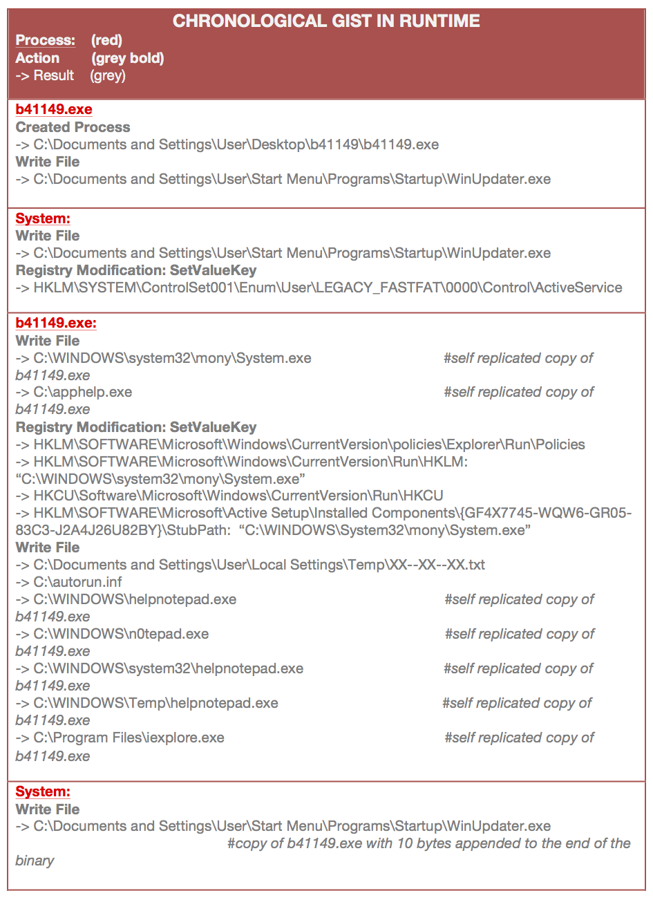 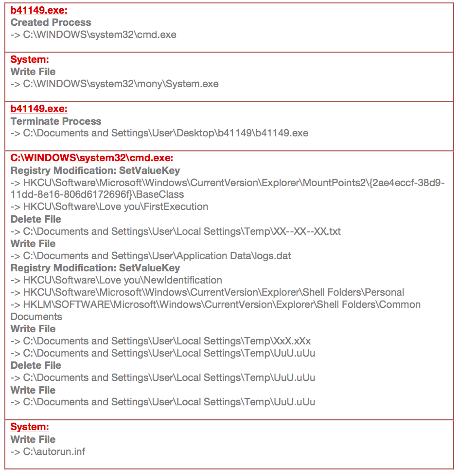 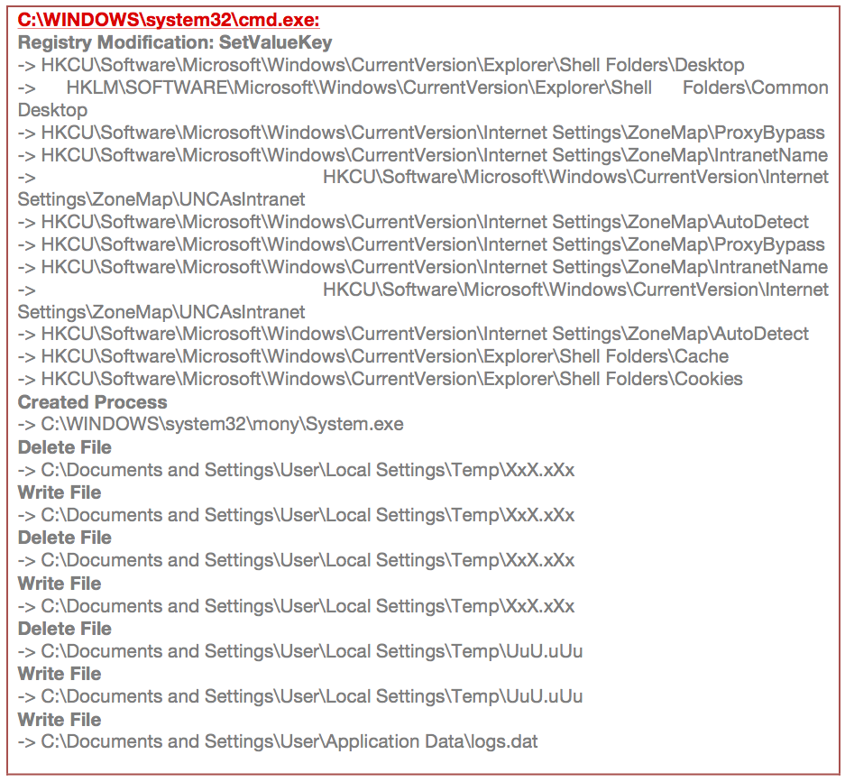 Table 1: Chronological Gist of Malware on an Infected Host
As previously stated, the Unicode-encoded binary embedded inside b41149.exe (reflected in Figure 4) is the real power of this malware - it does all the heavy lifting. As a stand-alone binary, it will do everything described in Table 1, except the self-replications, other than to %System%\mony\System.exe. In light of this, the remaining code in b41149.exe appears to be responsible for the other self-replications. However, before the embedded binary is functional (as a stand-alone), the PE Header must be fixed and 1,391 4-byte blocks of 0x00002000 must be removed. These 4-byte blocks of ‘filler’ are inserted every 400 bytes. The exact reason for this is unknown, but I would guess it’s to hinder reversing efforts. Once fixed, however, the binary will run independently and without any degradation of maliciousness.
The keylogged data file, logs.dat, is encoded with a 30-byte key, but not in its entirety. Each new process, such as notepad, a command shell, browser, etc., spawns a new line of keylogged data. And each line is delimited with #### (or 0x23232323). The key is then applied to each new line, following the delimiter. Deep dive analysis has not yet been done to uncover the actual encoding algorithm or loop. However, the encoded logs.dat file can be decoded by applying the following 30-byte key after each delimiter: 0E0A0B16050E0B0E160A05020304040C010B0E160604160A0B0604130B16. Figure 5 contains a hex view sample of the encoded logs.dat file.
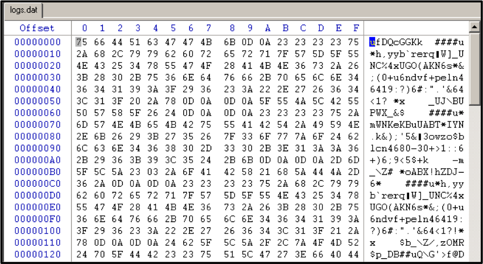 Figure 5: Hex View of Encoded Keylogged Data in LOGS.DAT
The following table demonstrates the decoding process for the first line of logs.dat. Each encoded byte is XOR’d with its corresponding byte from the key, producing the decoded byte. For example 0x75 XOR with 0x0E becomes 0x7B; or in ASCII, U becomes {.
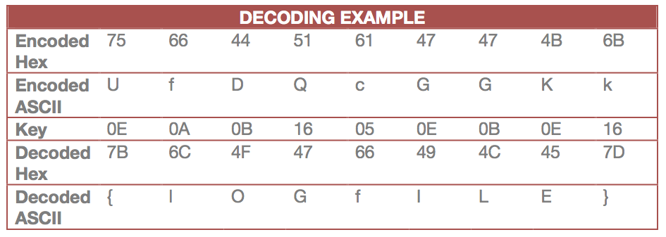 Table 2: Keylogger Decoding Scheme
Since the encoded line in Table 2 was only 9 bytes long, only the first 9 bytes of the key were utilized. However, the key does not resume from byte 10 on the next line of encoded text. It starts back from the beginning of the key (e.g. 0x0E0A0B, etc.) and it will repeat itself until that line of data concludes. To illustrate this further, the following table presents three different lines of encoded ASCII text followed by its decoded version. The alphabetic characters of the decoded text are upper case/lower case inverted, while the numeric and special characters are displaying normally.
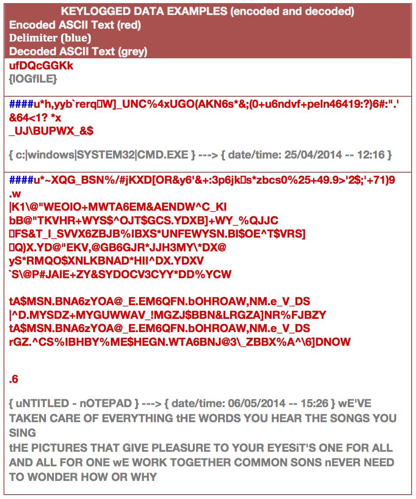 Table 3: Decoded Keylog Data
The most critical component of this malware runs in memory, but it’s written to disc ever so briefly by b41149.exe. The temporary file, “XX—XX—XX.txt”, is resident on the system for only a fraction of a second in the logged-on user’s %Temp% directory. Once running, the malware-spawned command shell deletes it (as reflected above in Table 1). XX—XX—XX.txt is XOR encoded with 0xBC, and once decoded, it contains the name of the reach back CnC domain a.servecounterstrike.com, as well as a UPX-packed dynamic link library (DLL) file. Strings of the DLL suggest it contains remote access tool (RAT) capability. In addition, since the DLL runs in memory, and XX—XX—XX.txt does not remain resident on the victim host, its presence could be difficult to determine.
The beginning of XX—XX—XX.txt displays the un-encoded file structure path from where the malware was executed. This string is followed by the path of the running process, which is the self-replicated System.exe. Immediately after is where the XOR encoded CnC reach back domain and the connection port are located. A single byte XOR key, 0xBC, is used for this, and Figure 6 reflects a “before and after” encoding look at the beginning portion of XX—XX—XX.txt.
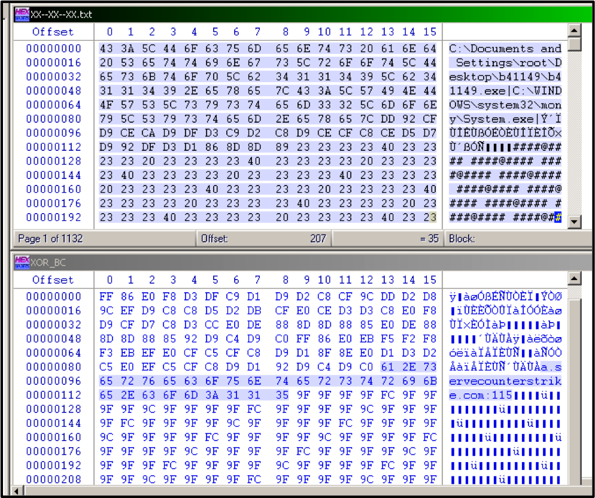 Figure 6: XX—XX—XX.txt Before and After Encoding
The DLL embedded inside XX—XX—XX.txt is near offset 1C192, but this is dependent upon the length of the path name from which the malware was executed. Figure 7 reflects a “before and after” encoding look at the embedded DLL’s DOS stub.
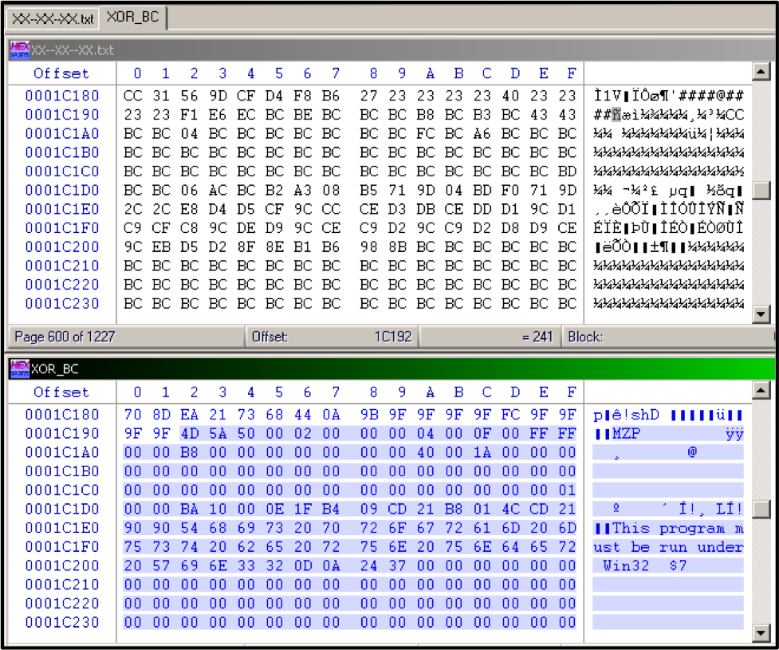 Figure 7: XOR Encoded DOS Stub Inside XX—XX—XX.TXT
As stated above, the DLL is UPX packed, but once unpacked, it reveals some interesting strings that provide some insight into its functionality. Table 4 lists some strings of interest.
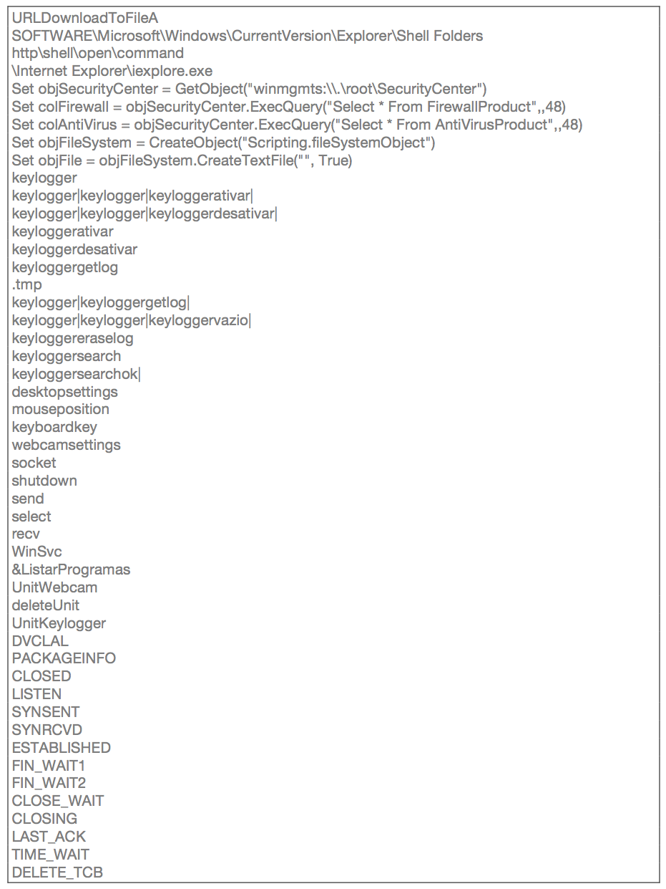 Table 4: Strings of Interest
Persistency is a key component of malware, and b41149.exe persists on the victim host through several mechanisms, such as the following registry RUN keys:
HKLM\SOFTWARE\Microsoft\Windows\CurrentVersion\policies\Explorer\Run\Policies: "C:\WINDOWS\system32\mony\System.exe"
HKLM\SOFTWARE\Microsoft\Windows\CurrentVersion\Run\HKLM: "C:\WINDOWS\system32\mony\System.exe"
In addition, a copy of the binary is stored in the user’s start up folder as WinUpdater.exe. However, 10 bytes are appended to the binary as shown in figure 8.
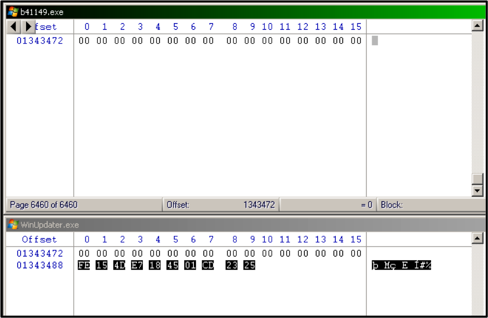 Figure 8: Trailing Byte Comparison of B41149.EXE / WINUPDATER.EXE
An autorun.inf file is also created in the root of the C:\ directory. Below is the content of the INF file, which opens apphelp.exe - also located in the root of C.
[autorun]
open=apphelp.
ACTION=
Perform a Virus
Scan
[autorun]
open=apphelp.
ACTION=
Perform a Virus
Scan
One unusual aspect of this malware is that while the main action takes place in memory, it is actually very noisy in terms of activity on the victim host. It writes, deletes, then rewrites two files in rapid succession to the logged-on user’s %Temp% directory. The files are XxX.xXx and UuU.uUu. Each file contains the current timestamp of the victim host in an HH:MM:SS format. No other data is contained within those files. Interestingly, XxX.xXx is rewritten at half-second intervals, while UuU.uUu is rewritten every five seconds. Figure 9 displays the contents of these files captured moments apart from one another.
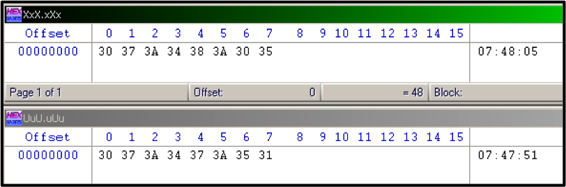 Figure 9: Content of XXX.XXX AND UUU.UUU
The most obvious sign of something being not quite right here is that upon execution, this binary spawns a command shell window for the user and everyone else to see. The shell is not a user interactive, because it cannot be typed in. However, if the shell is closed (or terminated), the malicious process, C:\WINDOWS\system32\mony\System.exe, restarts automatically. Interestingly, upon system reboot, the malicious process System.exe hooks to the default browser and runs as previously described, but it does not spawn a browser window. It’s possible that the visual command shell window is intended to trick the user into thinking there’s something wrong with the system, thus prompting a reboot.
Network Activity
As previously stated, the binary connects to a.servecounterstrike.com, which is compiled in memory. Upon execution of the binary, the victim host sends a DNS query for a.servecounterstrike.com, and once an IP address is returned, begins sending periodic SYN packet to the returned IP address over port 115, presumably until the attacker responds or until it receives further command from its CnC node. Figure 10 shows the PCAP of a compromised host’s initial connection with the malicious domain. This activity was captured from within an enclosed virtual network.
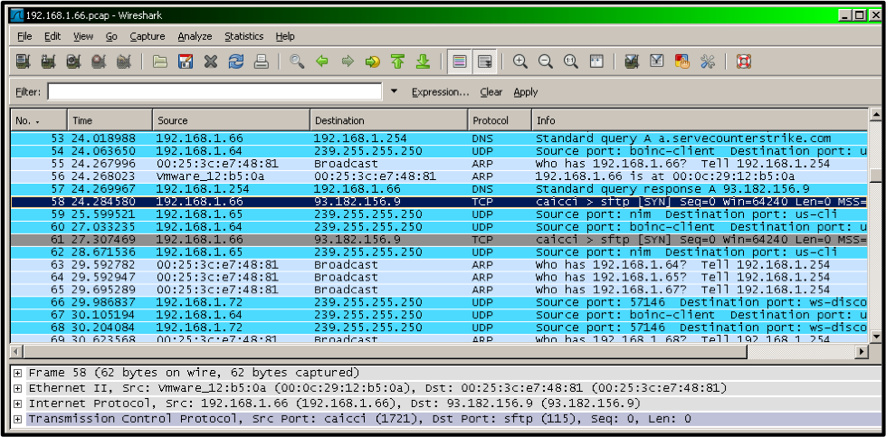 Figure 10: Initial Connection from a Compromised Host
During the short period in which the compromised virtual machine was left online, no return attacker activity occurred, so it’s undetermined what would transpire in the long term if this were an actual compromised online host.
Stay tuned for a follow-up post once I do some deeper dive analysis of this binary. For now, I’ll leave you with some hashes. Enjoy.
File Identifiers
File: b41149.exe Size: 1343488 MD5: f20b42fc2043bbc4dcd216f94adf6dd8 SHA1: 4d597d27e8a0b71276aee0dcd8c5fe5c2db094b0 SHA256: b41149a0142d04ac294e364131aa7d8b9cb1fd921e70f1ed263d9b5431c240a5 ssdeep: 6144:hEnCDKEJkKspH02n/M+WJ/04KLuqju11M+HDKsR:h9DdspH02004fqjujM+HGs Compile Time: 4F605417 (Wed, 14 March 2012 08:17:27 UTC) Compile Version: Microsoft Visual Basic 5.0 / 6.0 Internal File Name: Microsft.exe
File: embedded_ascii-encoded_bianry.exe (with fixed PE Header and “filler” byte blocks removed) Size: 277869 MD5: a47d9f42a1a1c69bc3e1537fa9fa9c92 SHA1: b2d588a96e29b0128e9691ffdae0db162ea8db2b SHA256: c17cb986ccd5b460757b8dbff1d7c87cd65157cf8203e309527a3e0d26db07e3 ssdeep: 6144:8k4qmyY+DAZCgIqiEM3OQFUrsyvfEUKMnqVZ:P9wQuCvjdordEGn6
File: c:\WINDOWS\system32\mony\System.exe (dropped by embedded Unicode encoded binary) Size: 277869 MD5: a47d9f42a1a1c69bc3e1537fa9fa9c92 SHA1: b2d588a96e29b0128e9691ffdae0db162ea8db2b SHA256: c17cb986ccd5b460757b8dbff1d7c87cd65157cf8203e309527a3e0d26db07e3 ssdeep: 6144:8k4qmyY+DAZCgIqiEM3OQFUrsyvfEUKMnqVZ:P9wQuCvjdordEGn6
File: embedded DLL in XX–XX–XX.txt Size: 120320 MD5: c1bc1dfc1edf85e663718f38aac79fff SHA1: 9d01c6d2b9512720ea7723e7dec5e3f6029aee3d SHA256: 5468be638be5902eb3d30ce8b01b1ac34b1ee26b97711f6bca95a03de5b0db24 ssdeep: 3072:dk7/I/KbMm4oIP9zaj1WyWBiyhdYKC0iwsUukhh3a:dkDuK4m4jWjv+nCksfQB
File: embedded DLL in XX–XX–XX.txt (unpacked) Size: 329728 MD5: f920cee005589f150856d311b4e5d363 SHA1: 2589fa5536331a53e9a264dd630af2bdb6f6fc00 SHA256: 1fd16ca095f1557cc8848b36633d4c570b10a2be26ec89d8a339c63c150d3b44 ssdeep: 6144:iQoh1rcU8kHOEkzsz+F97pk1nJJn7TB82R:j2RbHOEkzsaXmxn7T